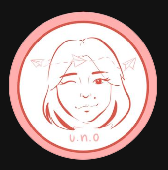
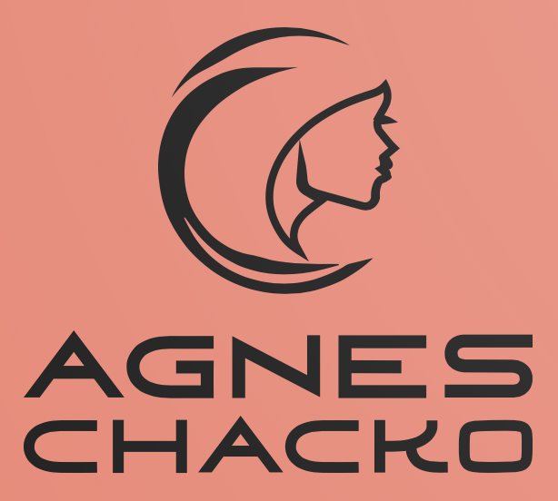

Agnes is a first year computer science student from Shrewsbury, MA. Agnes loves using her creativity in tech and desires to make a difference through her work. She has a strong passion for social justice, especially for topics relating to gender equality and education. In the past, she was a graphic designer for a Nonprofit Organization called Uno Society. Her work addresses issues on beauty standards and discrimination. Some of her work is linked below.